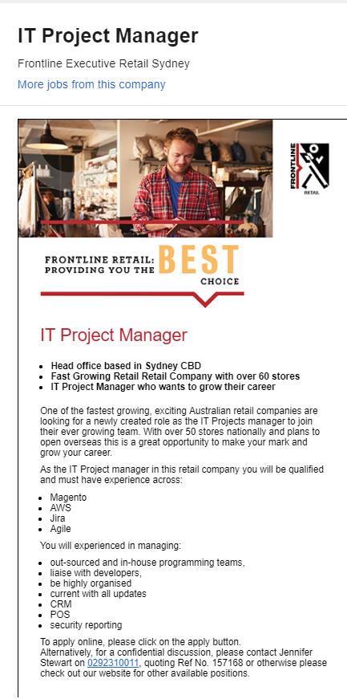

I was born in Australia, my mothers side is mostly German, fathers is various European. I am an English native but I can speak Japanese as well.
Did high school and spent a few years learning Japanese via self study. One of my main hobbies is playing or reading about video games, I generally
stick to RPG and action-based games. One of my favorite series is “Trails of..” or Kiseki.
During the end of primary school I became interested in playing around with the family computer. It started with games but ended up including
image editing and coding things, mainly to edit games to how I want them. Beginning in high school, my parents bought me my own computer,
I started to play more with hardware and spent far too long breaking and fixing my computer.
I chose RMIT as it had the most extensive program to learn a bit of everything and find which particularly field I want to specialize in.
I expect to learn skills related to most areas of IT; security, programming, web, etc. With a focus on programming and web related fields
which will give many possible career options in the future.
Ideal Job
https://www.seek.com.au/job/39154945

Project management entails leading every part of a project; planning the project, budgeting, ensuring smooth development throughout the projects
life and if necessary, to assist with the development should it be required.
This position appeals to me because I love the challenge of managing all the details of a job. Ensuring tasks get completed on time, motivating
staff and just making sure everything goes smoothly. I love the stress and challenges of that sort of work, the accomplishment you and your team
feel when it’s finally finished is blissful.
The skills and experiences required would be advanced knowledge of programming and the many languages, and many years experience. Extensive experience
with customer service systems and security is also required along with management experience. For this particular job, experience and references are
more important than formal qualifications.
My current skill set is very lacking and this job would be many years away, my programming skills are very basic – simple java and html. Experience wise,
I have extensive customer service experience which should be beneficial with learning the CRM systems but otherwise I am quite lacking there too.
My current plan is to focus on this degree to learn about all the general IT subjects, while on the side I intend to delve deeper into the other languages
and other useful subjects. I also plan on changing careers to an entry IT job such as admin while studying to get my foot in the industry.
These results pretty much mean I’m more of an independent worker and that I learn in a simpler method, by seeing or doing rather than reading or
I may have trouble working efficiently with others due to the preference of working alone but it’s unlikely for any emotional conflicts to occur.
In a team I may insist on doing a task by myself rather than asking for assistant or cooperate which may hinder the pace, but would be considerate to others feelings.
When forming a team, the preference to work alone should be taken into consideration, would possibly be detrimental to be matched with very vocal and easy to
anger people. With similar, more independent personalities it could also cause issues with a lack of teamwork. Being grouped with more patient and considerate
members would probably be the ideal match for my type, I think.